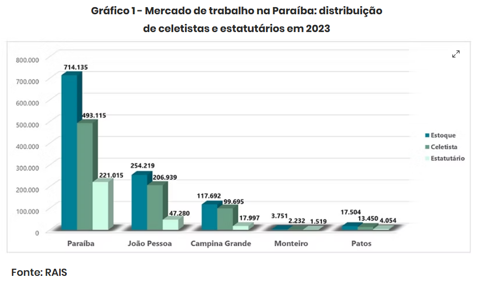
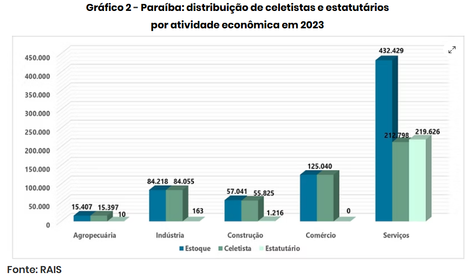
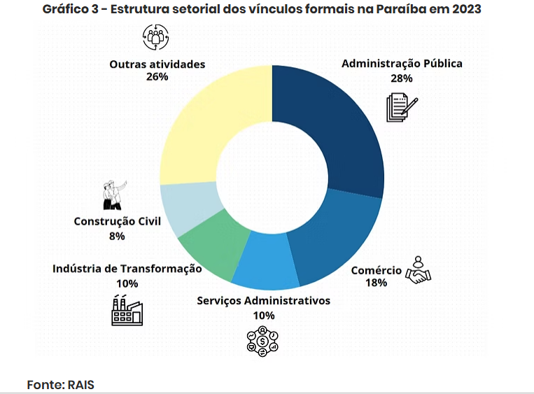

CONECTA - CAECO
CENTRO ACADÊMICO DE ECONOMIA - UFPB
Análises
Trabalhos escritos por projetos de pesquisa/extensão e por alunos do curso de Ciências Econômicas
CLT E SERVIÇO PÚBLICO: os dois pilares do trabalho formal na Paraíba
Autores: Felype Cavalcante e Mateus Eufrásio
Data: 28/02/2026
A Paraíba tem uma população de aproximadamente 4,1 milhões de habitantes, segundo dados do Instituto Brasileiro de Geografia e Estatística (IBGE). Deste total, apenas 17,4% estão inseridos no mercado formal de trabalho. É importante destacar que o restante inclui crianças, estudantes, aposentados e outras pessoas classificadas como população não economicamente ativa (PNEA). Assim, a análise recai sobre a população economicamente ativa (PEA), composta por pessoas ocupadas ou em busca de emprego.
No Brasil, o emprego formal se organiza basicamente em dois regimes: celetista (CLT), predominante no setor privado e também presente em terceirizações no setor público, e estatutário, típico do setor público, regido por normas próprias dos órgãos. Para compreender o peso de cada vínculo na estrutura ocupacional paraibana, utilizamos dados da Relação Anual de Informações Sociais (RAIS).
Para compreender melhor o peso desses vínculos na estrutura ocupacional do estado, utilizam-se dados da Relação Anual de Informações Sociais (RAIS), que permite detalhar a composição formal do emprego, tanto em termos agregados quanto por atividade econômica.
De acordo com a RAIS de 2023, a Paraíba registrou 714.135 vínculos de empregos formais. Desse total, 69% correspondem a trabalhadores celetistas (493.115) e 31% a trabalhadores estatutários (221.015). De acordo com a RAIS de 2023, a Paraíba registrou 714.135 vínculos de empregos formais. Desse total, 69% correspondem a trabalhadores celetistas (493.115) e 31% a trabalhadores estatutários (221.015).
Em termos territoriais, João Pessoa concentra 35,6% dos vínculos, seguida por Campina Grande (16,4%), Patos (2,4%) e Monteiro (0,5%). O perfil varia conforme o porte do município. Esse padrão reforça que municípios de maior dinamismo econômico apresentam predominância de vínculos celetistas, enquanto localidades menores, mais dependentes do setor público, registram maior participação de vínculos estatutários.
Comparativamente, o Nordeste possui 7,4 milhões de celetistas e 2,9 milhões de estatutários, enquanto no Brasil o número é de 45,2 milhões e 9,4 milhões, respectivamente. Assim, a predominância celetista é um fenômeno nacional, ainda que nuances regionais e locais revelem a importância do setor público para municípios de menor dinamismo econômico.
Ao observar a composição por setores, nota-se que a Administração Pública detém 28% dos vínculos formais, evidenciando a centralidade do emprego estatutário. Comércio (18%), Indústria de Transformação (10%), Serviços Administrativos (10%) e Construção Civil (8%) aparecem como principais setores do emprego formal paraibano.
Os dados da RAIS revelam que a maior concentração de estatutários está no setor de serviços, com 219.626 trabalhadores – superando, inclusive, o total de celetistas nesse segmento. Essa configuração é explicada pelo peso de escolas, hospitais, secretarias e outros órgãos públicos, especialmente em municípios menores, onde o Estado se configura como principal empregador. Por outro lado, setores como a indústria e o comércio evidenciam a predominância celetista.
Essa distribuição demonstra a dualidade estrutural do mercado de trabalho formal na Paraíba: enquanto o setor público garante estabilidade via vínculos estatutários, sobretudo nas mesorregiões do Sertão e Borborema, o setor privado sustenta a maior parte dos postos celetistas, em especial nas regiões mais dinâmicas da Zona da Mata e do Agreste.
A análise da composição entre celetistas e estatutários em 2023 evidencia que o emprego formal paraibano apresenta uma divisão marcada pela predominância do setor privado, mas com forte peso do setor público em regiões de menor dinamismo econômico.
Assim, compreender o papel dos vínculos estatutários e celetistas é fundamental para interpretar a estrutura ocupacional do estado. Essa leitura mostra como a dependência do setor público em áreas mais vulneráveis convive com a diversificação do setor privado nas regiões mais desenvolvidas, gerando contrastes regionais que influenciam não apenas o mercado de trabalho, mas também as condições de desenvolvimento socioeconômico da Paraíba.
Na mesorregião da Zona da Mata, composta por 30 municípios, concentra-se a maior parte do trabalho formal na Paraíba, com cerca de 382 mil vínculos ativos, segundo dados da RAIS, o que corresponde a aproximadamente 53,5% de todo o estoque estadual de empregos formais. A composição desse mercado de trabalho tem destaque para a Administração Pública (19%), Comércio (18%), Indústria de Transformação (11%) e Construção Civil (11%). Grande parte dessa concentração está localizada na Região Metropolitana de João Pessoa, que abriga a sede do governo estadual, órgãos federais, além de importantes instituições de saúde e ensino, o que reforça a forte presença estatutária na região.
O polo comercial da mesorregião também se mostra em expansão, com destaque tanto para o comércio atacadista quanto para o varejista, o que explica a relevância da ocupação de vendedores, que representa 7,7% dos vínculos formais da região. Apesar da perda recente de dinamismo industrial, em especial após a recuperação judicial do grupo Coteminas, a indústria ainda desempenha papel relevante, sobretudo por meio das agroindústrias de derivados da cana-de-açúcar, concentradas no município de Santa Rita, e da indústria cimenteira, com a unidade da Elizabeth Cimentos em Alhandra.
Outro fator importante é o crescimento populacional de João Pessoa, que registrou aumento de 15,3% no Censo de 2022. Esse movimento tem impulsionado fortemente a Construção Civil, que entre 2022 e 2023, apresentou uma variação positiva de 22,7% na criação de novos postos de trabalho, alcançando um recorde histórico de 40,7 mil vínculos formais e superando o patamar anterior de 2012.
A segunda mesorregião mais dinâmica da Paraíba é o Agreste, composta por cerca de 66 municípios e responsável por 203 mil empregos formais, de acordo com a plataforma RAIS, o que equivale a 28,4% do estoque estadual. Sua estrutura de empregos é marcada pela forte presença da Administração Pública (30%), seguida pelo Comércio (17%), Serviços Administrativos (14%) e Indústria de Transformação (12%).
A maior participação do setor público em relação à Zona da Mata revela a dependência de muitos municípios menores do emprego estatutário, reforçando o papel do Estado como principal empregador na região. Em paralelo, Campina Grande, maior centro urbano do Agreste, concentra instituições de ensino e saúde pública de grande porte, o que amplia a relevância da Administração Pública no conjunto da mesorregião.
O setor comercial também desempenha papel central. Em Campina Grande, sua importância é histórica: já que no século XIX a cidade se consolidava como polo de feiras de gado, articulando a produção de subsistência dos interiores da Paraíba e de estados circunvizinhos. Atualmente, esse protagonismo é reforçado pelo dinamismo do turismo e pela força do comércio atacadista e varejista, o que explica a relevância da ocupação de vendedores, que representa 7,5% dos empregos formais da mesorregião. Ademais, o comércio de menor porte, especialmente micro e pequenos empreendimentos, mantém importância significativa na geração de postos de trabalho nos municípios menos dinâmicos.
Além disso, os serviços administrativos privados ganharam destaque, tornando-se o terceiro maior setor em geração de empregos formais. Esse crescimento foi impulsionado principalmente pela expansão do setor de Call Centers, que elevou a ocupação de operadores de telemarketing em 62,3% entre 2020 e 2023. Outro destaque é a consolidação da profissão de assistente administrativo, que responde por 10% de todas as ocupações formais do Agreste, figurando como a categoria profissional mais empregadora.
No Agreste, a indústria apresenta a maior participação relativa em comparação às demais mesorregiões da Paraíba, destacando-se principalmente pelo setor calçadista de Campina Grande, onde o grupo empresarial Alpargatas exerce papel central na geração de empregos formais. Além disso, a mesorregião abriga polos industriais significativos no setor alimentício, com destaque para o município de Guarabira, sede do grupo Guaraves, responsável pela marca Bom Todo, que consolidou a região como um importante centro da agroindústria avícola.
Apesar dessa relevância, a mesorregião atravessa um processo de desindustrialização, evidenciado pela redução de 11% dos postos de trabalho industriais entre 2022 e 2023. Esse movimento reflete tanto a retração das atividades tradicionais, como o enfraquecimento de segmentos ligados ao setor calçadista, quanto a crescente transferência de dinamismo econômico para os setores de serviços e comércio.
Por outro lado, as mesorregiões do Sertão e da Borborema, compostas por 83 e 60 municípios, respectivamente, apresentam características semelhantes na composição do mercado de trabalho formal. Juntas, elas respondem por cerca de 13,7% e 4,3% do estoque de empregos formais da Paraíba, respectivamente, o que evidencia uma participação relativamente reduzida em comparação à Zona da Mata e ao Agreste.
O perfil ocupacional dessas regiões é marcado, em grande medida, pela predominância da Administração Pública, que absorve parcela significativa da força de trabalho, refletindo a dependência de vínculos empregatícios ligados ao setor público. O comércio local, por sua vez, apresenta uma estrutura fortemente baseada em micro e pequenos comércios, chamados de mercadinhos, desempenhando papel essencial na geração de ocupações e na sustentação das economias municipais.
Entretanto, algumas exceções se destacam dentro do Sertão, notadamente os municípios de Patos, Sousa e Cajazeiras, que funcionam como polos regionais de maior dinamismo econômico. Nesses municípios, observa-se uma presença mais expressiva do setor administrativo e comercial, bem como uma maior diversidade de atividades produtivas e de serviços, capazes de atrair trabalhadores de municípios vizinhos e, assim, consolidar sua posição como centros sub-regionais de influência. Desta forma, é notório a dependência econômica de municípios menores do emprego estatutário do serviço público, em contraste dos grandes centros econômicos, que apresentam maior diversificação a partir do serviço privado.

Copyright © CONECTA-CAECO 2026